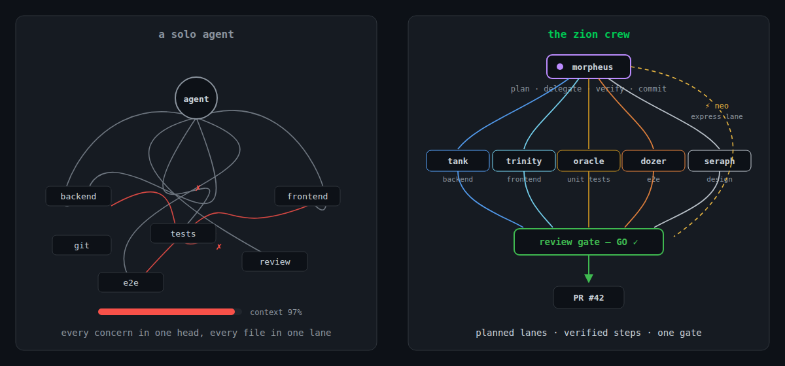
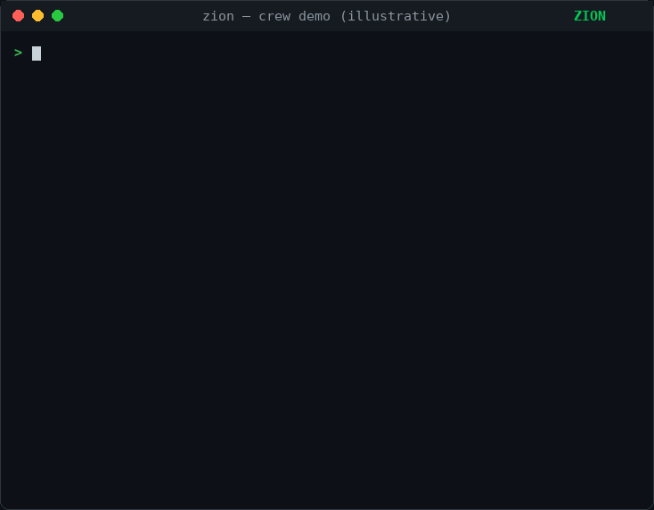

One agent doing everything holds the whole feature in one context and reviews its own work. Zion splits the job the way a team would: a captain that plans and delegates, specialists that each own one lane, and hook-enforced guardrails that make the boundaries real rather than advisory.
$ claude plugin marketplace add johantor/zion $ claude plugin install crew@zion

They share the same configuration slots and the same review rubric, so installing more than one adds capability without conflicts.
Orchestrated, multi-agent feature delivery. A captain plans the work and delegates to backend, frontend, test, and visual-review specialists, with a consolidated GO/NO-GO gate before anything ships.
Pointer-driven tech-debt remediation and dependency upgrades. Fix one suppression, rule, or package at a time, with the blast radius reported before anything moves.
The code-review rubric used across the suite, packaged standalone for teams who only want the standards. One skill — no commands, agents, or hooks.
Note: crew already bundles the
engineering-principles rubric. Install the standalone plugin only if you don't
use crew.
morpheus plans the work, presents the plan for your go-ahead, then delegates each
step to a specialist. It writes no production code itself, and it is the only agent that
touches git.
Plans and delegates. Maintains a written plan with per-step acceptance criteria, and commits each step only once it passes.
Implements backend work for the stack the project resolves to.
Implements the frontend, including a shared server template's markup in server-rendered mode.
Authors all unit tests — backend, plus frontend component tests when a tool is configured.
Frontend e2e only, for whichever e2e tool the project resolves to.
Visual design conformance. Names the design token, not just the pixel value.
Generalist for small, low-risk changes across all lanes, skipping the full ceremony.
Post-merge triage. Traces a production signal to the code and the suspect commits, and returns a pointer rather than a fix.
Namespaced once installed. /crew:feature and /crew:address are thin
routers, so both also work by just asking in a
claude --agent crew:morpheus session.
/crew:initOnce per project: detect and record the build, test, and lint configuration./crew:featurePlan, delegate, build, and stop at the review gate./crew:reviewPre-PR GO / NO-GO: code, security, and design review plus build, test, and lint./crew:prPush the branch and open the pull request. The only path out of the machine./crew:addressRoute review comments and CI failures back to the crew, then re-run the gate./crew:triageA bug report, trace, or alert → the code and the suspect commits./crew:loopOuter-loop driver: re-launch the captain each tick until the plan's exit conditions are met./crew:notifyMessage another running crew session.An instruction in a prompt is a suggestion to a model. These are enforced by the harness before the tool call runs, so a worker cannot talk its way past them.
rm, force-push, and writes into
.git/ are blocked./crew:pr.
/crew:feature run, start to review gate.Pointer-driven, not sweep-driven. Every run starts from something you identified, and a required scope argument prevents accidental full-repo scans. Deleting the suppression makes the analyzer itself the regression test.
/keymaker:openA suppression at a line, an analyzer or ESLint rule, or a dependency upgrade./keymaker:auditRead-only scout over a scope you name; returns ready-to-paste pointers.Two stacks today: .NET / C# and TypeScript / JavaScript. Platform-scale migrations get a handoff outline rather than a forced implementation, and the blast radius is reported before any edit. Expect breaking changes before v1.0.
crew and keymaker branch and commit their work.You can also install from the UI: run /plugin in Claude Code and browse
to Discover.